class: center, middle 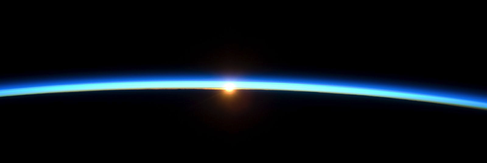 # Topic 1: Rotating, Stratified, Thin [{Shane Keating}](https://srkeating.com/), UNSW School of Mathematics and Statistics UNSW Sydney, Term 1 2019 .footnote[Created with [{Remark.js}](http://remarkjs.com/) using [{Markdown}](https://daringfireball.net/projects/markdown/) + [{MathJax}](https://www.mathjax.org/)] --- class: middle, left # 1.1 Calculus on a Carousel > "He that is giddy thinks the world turns around." > William Shakespeare, *Taming of the Shrew Act 5 Scene 2* --- class: center ## How do we represent *rotation* mathematically? <img src="rotation1.png" align="center" width="50%"/> `$$\begin{align*} \mbox{Angular velocity} \qquad & \Omega = \frac{2 \pi}{T} \qquad \left[\mbox{seconds}^{-1}\right] \\ \mbox{Period} \qquad & T = \frac{2 \pi}{\Omega} \qquad \left[\mbox{seconds}\right] \end{align*} $$` ----- $\Omega =$ "omega" (upper case) --- class: center ### Rotation rate of Earth Sidereal day (wrt fixed stars): `$$T = 23.93 \; \mbox{hours}$$` (Earth's solar day `$\approx 24$` hours combines rotation and motion along orbit.) `$$\Omega = \frac{2 \pi}{23.93 \times 60 \times 60} = 7.29 \times 10^{-5} \; \mbox{s}^{-1}$$` -- ### Rotation rate of a carousel Period of `$6$` seconds = `$10$` rpm (revolutions per minute). `$$\Omega = \frac{2 \pi}{6} = 1 \; \mbox{s}^{-1} \gg \Omega_{Earth}$$` --- class: middle, center ## Tangental velocity View from above North Pole: Earth rotates counterclockwise ("prograde" = same direction as Sun) <img src="rotation2.png" align="center" width="50%"/> ----- $\theta = $ "theta" (lower case) --- class: middle, center ### Tangential velocity at Equator At Earth's surface $R_{Eq} = 6378$ km $$V_T = \frac{\mbox{Circumference}}{\mbox{Period}} = \frac{2 \pi \times 6378}{23.93} = 1674 \; \mbox{km/hr}$$ In a geostationary orbit $R_{Geo} = 42000$ km $$V_T = \frac{\mbox{Circumference}}{\mbox{Period}} = \frac{2 \pi \times 42000}{23.93} = 11000 \; \mbox{km/hr}$$ --- class: middle, center # 1.2 Kinematics in a rotating reference frame ### Velocity `$$\large \boldsymbol{v}_0 = \boldsymbol{v}_R + \boldsymbol{\Omega} \times \boldsymbol{r} $$` `$$ \begin{align*} \boldsymbol{v}_0 \qquad & \mbox{Absolute velocity (measured in fixed frame)} \\ \boldsymbol{v}_R \qquad & \mbox{Relative velocity (measured in rotating frame)} \\ \boldsymbol{\Omega} \times \boldsymbol{r} \qquad & \mbox{Apparent deflection due to rotation} \end{align*} $$` --- class: middle, center ### Acceleration `$$\large \left. \frac{d \boldsymbol{v}_R}{dt} \right|_R = \left. \frac{d \boldsymbol{v}_0}{dt} \right|_0 - 2 \boldsymbol{\Omega} \times \boldsymbol{v}_R - \boldsymbol{\Omega} \times \left( \boldsymbol{\Omega} \times \boldsymbol{r} \right) $$` `$$ \begin{align*} \left. \frac{d \boldsymbol{v}_R}{dt} \right|_R \qquad & \mbox{Acceleration in rotating frame} \\ \left. \frac{d \boldsymbol{v}_0}{dt} \right|_0 \qquad & \mbox{Force/mass in fixed frame} \\ -2 \boldsymbol{\Omega} \times \boldsymbol{v}_R \qquad & \mbox{Coriolis force} \\ -\boldsymbol{\Omega} \times \left( \boldsymbol{\Omega} \times \boldsymbol{r} \right) \qquad & \mbox{Centrifugal force} \end{align*} $$` --- class: middle, center ### Coriolis force <img src="rotation5.png" align="center" width="75%"/> Demonstration: [{MIT Department of Physics}](https://www.youtube.com/watch?v=dt_XJp77-mk) --- class: middle, center ### Centrifugal force <img src="centrifugal-force.png" align="center" width="50%"/> $$-\boldsymbol{\Omega \times} \left( \boldsymbol{\Omega \times r} \right) = \Omega^2 \boldsymbol{r_\perp}$$ where $\boldsymbol{r_\perp}$ is the component of the vector $\boldsymbol{r}$ perpendicular to the axis of rotation `$$\boldsymbol{r} = \boldsymbol{r_\perp} + \boldsymbol{r_\parallel}$$` --- class: middle, center ### Tangent plane approximation 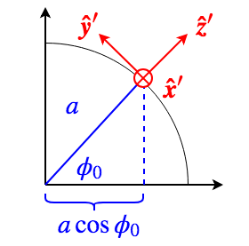 Plane tangent to the Earth's surface at latitude $\phi_0$ and longitude $\lambda_0$: `$$ \begin{align*} x' & = & a \cos \phi_0 \left( \lambda - \lambda_0 \right) & \qquad \mbox{East (zonal)} \\ y' & = & a \left( \phi - \phi_0 \right) & \qquad \mbox{North (meridional)} \\ z' & = & r - a & \qquad \mbox{Up} \end{align*} $$` ----- $\phi = $ "phi" (lower case), $\lambda = $ "lambda" (lower case) --- class: middle, center ### Coriolis force in tangent plane approximation `$$-2 \boldsymbol{\Omega} \times \boldsymbol{v} = \left( \begin{array}c - w f_* + v f \\ - u f \\ u f_* \end{array} \right)$$` In the **Northern hemisphere** ($f > 0$, $f_* > 0$) Direction of motion | Coriolis | Eötvös | Newton | :-------------------|:---------|:-------|:-------| North ($v>0$) | East | - | - | South ($v<0$) | West | - | - | East ($u>0$) | South | Up | - | West ($u<0$) | North | Down | - | Up ($w>0$) | - | - | West | Down ($w<0$) | - | - | East | --- class: middle, center 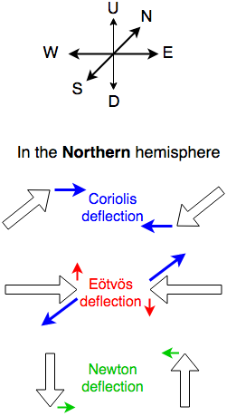 --- class: middle, left # 1.3 Go with the flow > "How can we know the dancer from the dance?" > W.B. Yeats, *Among School Children* --- class: middle, center ## What is a fluid? 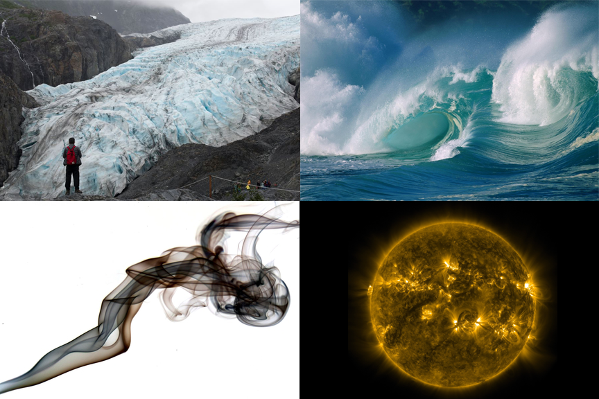 --- class: middle, left A **fluid** is a *continuous medium* that *deforms under stress* - **continuous medium**: consists of infinitessimal parcels of fluid "material" - **deforms under stress**: changes shape due to contact forces with neighboring fluid parcels Classical states of matter: solid, liquid, gas, plasma - Liquids, gases, and plasmas are fluids. 99% of the visibile universe is a fluid (plasma) - **Plastic solids** behave like solids on short times but like fluids on long times --- class: middle, center 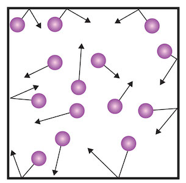 In fluid dynamics, the average effect of *microscopic* interactions among individual atoms is represented by equations describing the evolution of *macroscopic* properties: | Microscopic | Macroscopic | | :------------------------------------ | :--------------------- | | conservation of mass | continuity equation | | conservation of momentum | Newton's second law | | conservation of energy | energy equation | | thermodynamic properties of the fluid | equation of state | | mechanical properties of the fluid | constitutive equation | --- class: middle, left ## Eulerian and Lagrangian representations Equivalent representations of a flow: **Eulerian representation:** field evaluated at fixed points in space - "fixed frame" Scalar fields: - Temperature $T(x,y,z,t) = T(\boldsymbol{x}, t)$ - Pressure $p(\boldsymbol{x},t)$ - Density $\rho(\boldsymbol{x},t)$ Vector fields: - Velocity $\boldsymbol{v} (\boldsymbol{x}, t) = \left( u, v, w \right)$ - Vorticity $\boldsymbol{\omega} (\boldsymbol{x},t) = \boldsymbol{\nabla \times v}$ ----- $\rho$ = "rho" (lower case), $\omega$ = "omega" (lower case) --- class: middle, left **Lagrangian representation:** field evaluated at points moving with the flow - "flow following" $$T(\boldsymbol{r}(t), t), \quad \mbox{where} \quad \frac{d \boldsymbol{r}}{dt} = \boldsymbol{v} \left( \boldsymbol{r} (t), t \right)$$ Can be labelled by initial position `$\boldsymbol{r}_0 = \boldsymbol{r} (0)$`, i.e. `$T_{\boldsymbol{r}_0} (t)$`. <img src="lagrangian.png" align="center" width="50%"/> --- class: middle, left # 1.4 Heat, Air, Water, Salt > "This isn't your typical cookbook." > Samin Nosrat, *Salt, Fat, Acid, Heat: Mastering the Elements of Good Cooking* --- class: middle, left ## The story so far... Eulerian representation: `$$\begin{align*} & \frac{d \rho}{d t} + \boldsymbol{v \cdot \nabla} \rho = - \rho \boldsymbol{\nabla \cdot v} & \quad \mbox{continuity equation} \\ & \frac{d \boldsymbol{v}}{d t} + \boldsymbol{v \cdot \nabla v} = \sum \boldsymbol{f} & \quad \mbox{momentum equation} \end{align*}$$` Lagrangian representation: `$$\begin{align*} & \frac{D \rho}{D t} = - \rho \boldsymbol{\nabla \cdot v} & \quad \mbox{continuity equation} \\ & \frac{D \boldsymbol{v}}{D t} = \sum \boldsymbol{f} & \quad \mbox{momentum equation} \end{align*}$$` Forces: $$ \sum \boldsymbol{f} = - \frac{1}{\rho} \boldsymbol{\nabla} p - \boldsymbol{\nabla} \Phi - 2 \boldsymbol{\Omega \times v} $$ --- class: middle, left 4 equations: $$\left( \frac{d \rho}{d t}, \frac{d u}{dt}, \frac{dv}{dt}, \frac{dw}{dt} \right)$$ 5 unknowns: $$\left( \rho, u, v, w, p \right)$$ Need an additional **equation of state** to close the system $$p = p \left( \rho, T, \cdots \right)$$ In some problems also need an **energy equation**, e.g. $$\frac{D T}{D t} = Q$$ --- class: middle, left Relates state variables (e.g. $p$, $V$, $T$, $\cdots$) and properties of the fluid (e.g. $N$, $\rho$, $\cdots$). `$$\begin{align*} & p \; = \mbox{pressure} \qquad & \left[ \mbox{N m}^{-2}\right] = \left[\mbox{Pa} \right] \\ & V \; = \mbox{volume} \qquad & \left[ \mbox{m}^3 \right] \\ & T \; = \mbox{temperature} \qquad & \left[ \mbox{K} \right] = \left[ ^\circ \mbox{C} + 273.15 \right] \\ & N \; = \mbox{number of moles} \qquad & \left[ \mbox{mol} \right] = \left[ 6.022 \times 10^{23} \right] \\ & \rho \; = \mbox{mass density} \qquad & \left[ \mbox{kg m}^{-3} \right] \end{align*}$$` --- class: middle, left ### Typical values #### Pressure at sea level `$$\begin{align*} 1 \; \mbox{atm} & = 101325 \; \mbox{Pa} & \mbox{[Pascals]}\\ & = 1013.25 \; \mbox{hPa, mbar} & \mbox{[hectoPascals, millibar]}\\ & = 1.01325 \; \mbox{bar} & \mbox{[bar]} \end{align*}$$` #### Temperature at sea level $$20 \; ^\circ \mbox{C} = 293.15 \; \mbox{K}$$ --- class: middle, left #### Density of dry air and seawater `$$\begin{align*} \rho_\mbox{air} & \approx 1.23 \; \mbox{kg m}^{-3} \\ \rho_\mbox{sea} & \approx 1020 \; \mbox{kg m}^{-2} \end{align*}$$` #### Mass of 1 mole of dry air and seawater `$$\begin{align*} m_\mbox{air} & \approx 28.97 \; \mbox{g mol}^{-1} \\ m_\mbox{sea} & \approx 18.64 \; \mbox{g mol}^{-1} \\ \end{align*}$$` --- class: middle, center 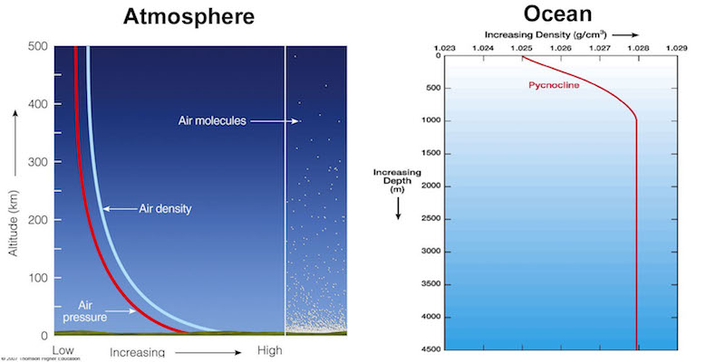 --- class: middle, left # 1.5 Rotating, Stratified, and Thin > "If you had a globe covered with a coat of varnish, the thickness of that varnish would be about the same as the thickness of Earth's atmosphere compared to the Earth itself." > Carl Sagan --- class: middle, left ## Rotating, stratified, thin The large-scale circulation of the atmosphere and ocean is... - Rapidly rotating $$\mbox{Rossby number} \ll 1$$ - Stratified $$\mbox{Richardson number} > 1$$ - Thin $$\mbox{aspect ratio} \ll 1$$ --- class: middle, left ### When is rotation important? - Rossby number $$ \mbox{Ro} = \frac{\mbox{Time for one rotation}}{\mbox{Time to move distance $L$}} = \frac{2 \pi / \Omega}{L / U}. $$ - For Ro $\ll 1$, rotation is important: small $U$ or large $L$: - $L = 1$ m : $U \le 0.012$ mm/s - $L = 1$ km : $U \le 1.2$ cm/s - $L = 1000$ km : $U \le 12$ m/s --- class: middle, left ### When is stratification important? 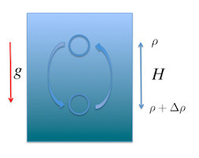 - Richardson number $$Ri = \frac{\mbox{Change in potential energy}}{\mbox{Kinetic energy of motion}} = \frac{\Delta \rho g H}{\frac{1}{2} \rho U^2}.$$ - For $Ri > 1$, insufficient KE to perturb stratification - For $Ri < 1$, stratification is negligible --- class: middle, left ## Thin 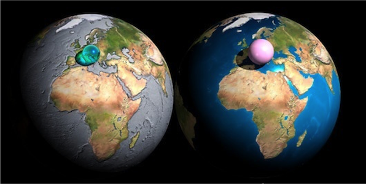 Geophysical fluids are very thin! - 80% of mass of the atmosphere within 10 km altitude - mean depth of the ocean is 3.7 km --- class: middle, left ### When is thinness important? 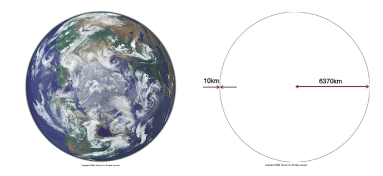 $$\mbox{Aspect ratio} = \frac{\mbox{vertical scale}}{\mbox{horizontal scale}} = \frac{H}{L} $$ When aspect ration $\ll 1$, horizontal motions dominates vertical motion. --- class: middle, left ### When are rotation, stratification _and_ thinness important? - Rossby number $\ll 1$, Richardson number $\approx 1$ $$ \mbox{Ro} \ll 1 \quad \Longrightarrow \quad L \gg \frac{U}{\Omega} $$ $$ \mbox{Ri} \approx 1 \quad \Longrightarrow \quad U \approx \sqrt{ \frac{\Delta \rho}{\rho} g H } $$ - Defines a characteristic lengthscale: Rossby radius of deformation $$ L \gg L_D \approx \frac{1}{\Omega} \sqrt{ \frac{\Delta \rho}{\rho} g H } $$ - Small aspect ratio $H \approx \alpha L_D$ `$$\begin{align*} \mbox{atmosphere:} & \quad L_D \approx 500 \; \mbox{km} & H \approx 5 \; \mbox{km} \\ \mbox{ocean:} & \quad L_D \approx 50 \; \mbox{km} & H \approx 500 \; \mbox{m} \end{align*}$$` --- class: middle, left # 1.6 Geophysical fluid dynamics > "Science, my lad, is made up of mistakes, but they are mistakes which it is useful to make, because they lead little by little to the truth." > Jules Verne, *A Journey to the Centre of the Earth* --- class: middle, left ## Geostrophic balance For flows that are dominated by rotation and stratification and have a small aspect ratio, the dominant force balance is $$ \mbox{Coriolis force} \approx \mbox{Horizontal pressure gradient} $$ This is called *geostrophic balance*. It implies that flow follows lines of constant pressure (isobars). 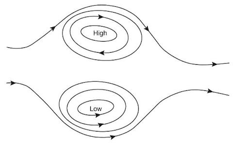 --- class: middle, center 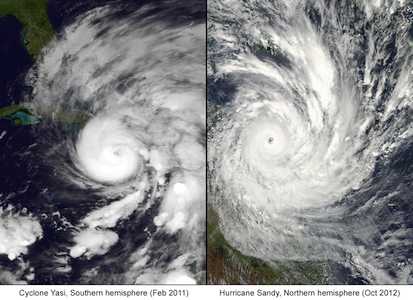 In the Northern hemisphere the flow is - clockwise around high pressure - anticlockwise around low pressure In the Southern hemisphere the flow is - anticlockwise around high pressure - clockwise around low pressure Low pressure systems are called *cyclones* and high pressure systems are called *anticyclones*.